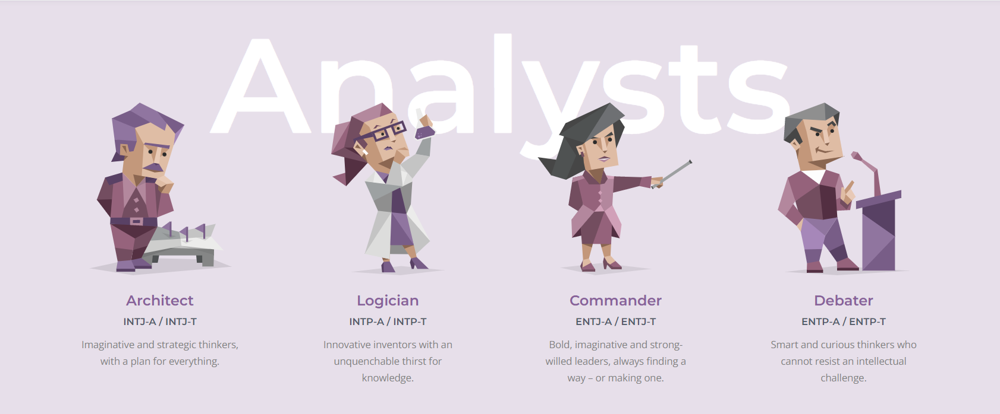
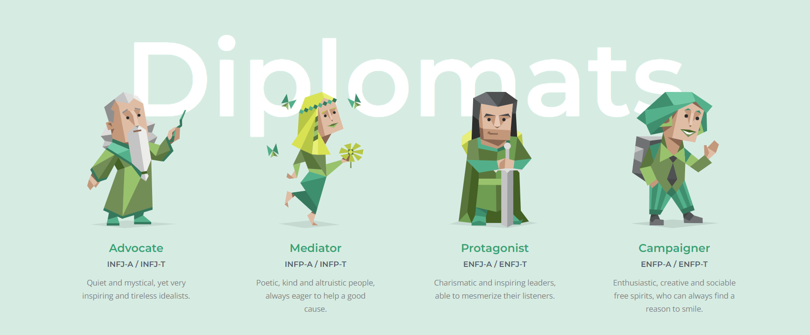
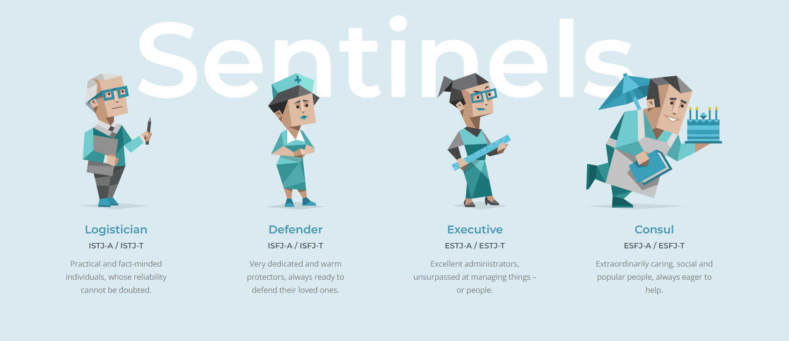
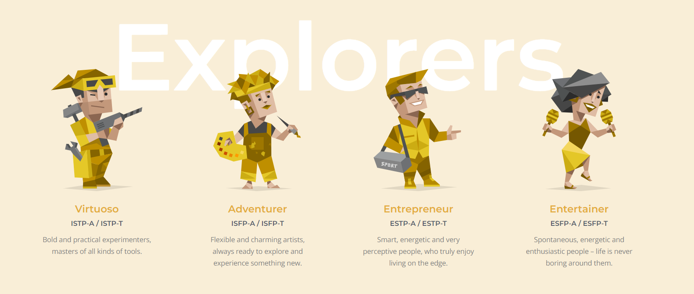

Personality Detection Model




Let's Know Your Personality
" Rate yourself from -3 to 3 "
Response Id
You regularly make new friends
spend a lot of your free time exploring various random topics that pique your interest
Seeing other people cry can easily make you feel like you want to cry too
You often make a backup plan for a backup plan
You usually stay calm, even under a lot of pressure
At social events, you rarely try to introduce yourself to new people and mostly talk to the ones you already know
You prefer to completely finish one project before starting another
You are very sentimental
You like to use organizing tools like schedules and lists
Even a small mistake can cause you to doubt your overall abilities and knowledge
You feel comfortable just walking up to someone you find interesting and striking up a conversation
You are not too interested in discussing various interpretations and analyses of creative works
You are more inclined to follow your head than your heart
You usually prefer just doing what you feel like at any given moment instead of planning a particular daily routine
You rarely worry about whether you make a good impression on people you meet
You enjoy participating in group activities
You like books and movies that make you come up with your own interpretation of the ending
Your happiness comes more from helping others accomplish things than your own accomplishments
You are interested in so many things that you find it difficult to choose what to try next
You are prone to worrying that things will take a turn for the worse
You avoid leadership roles in group settings
You are definitely not an artistic type of person
You think the world would be a better place if people relied more on rationality and less on their feelings
You prefer to do your chores before allowing yourself to relax
You enjoy watching people argue
You tend to avoid drawing attention to yourself
Your mood can change very quickly
You lose patience with people who are not as efficient as you
You often end up doing things at the last possible moment
You have always been fascinated by the question of what, if anything, happens after death
You usually prefer to be around others rather than on your own
You become bored or lose interest when the discussion gets highly theoretical
You find it easy to empathize with a person whose experiences are very different from yours
You usually postpone finalizing decisions for as long as possible
You rarely second-guess the choices that you have made
After a long and exhausting week, a lively social event is just what you need
You enjoy going to art museums
You often have a hard time understanding other people's feelings
"You like to have a to-do list for each day
You rarely feel insecure
You avoid making phone calls
You often spend a lot of time trying to understand views that are very different from your own
In your social circle, you are often the one who contacts your friends and initiates activities
If your plans are interrupted, your top priority is to get back on track as soon as possible
You are still bothered by mistakes that you made a long time ago
You rarely contemplate the reasons for human existence or the meaning of life
Your emotions control you more than you control them
You take great care not to make people look bad, even when it is completely their fault
Your personal work style is closer to spontaneous bursts of energy than organized and consistent efforts
When someone thinks highly of you, you wonder how long it will take them to feel disappointed in you
You would love a job that requires you to work alone most of the time
You believe that pondering abstract philosophical questions is a waste of time
You feel more drawn to places with busy, bustling atmospheres than quiet, intimate places
You know at first glance how someone is feeling
You often feel overwhelmed
You complete things methodically without skipping over any steps
You are very intrigued by things labeled as controversial
You would pass along a good opportunity if you thought someone else needed it more
You struggle with deadlines
You feel confident that things will work out for you
Predict
{{ prediction_text }}